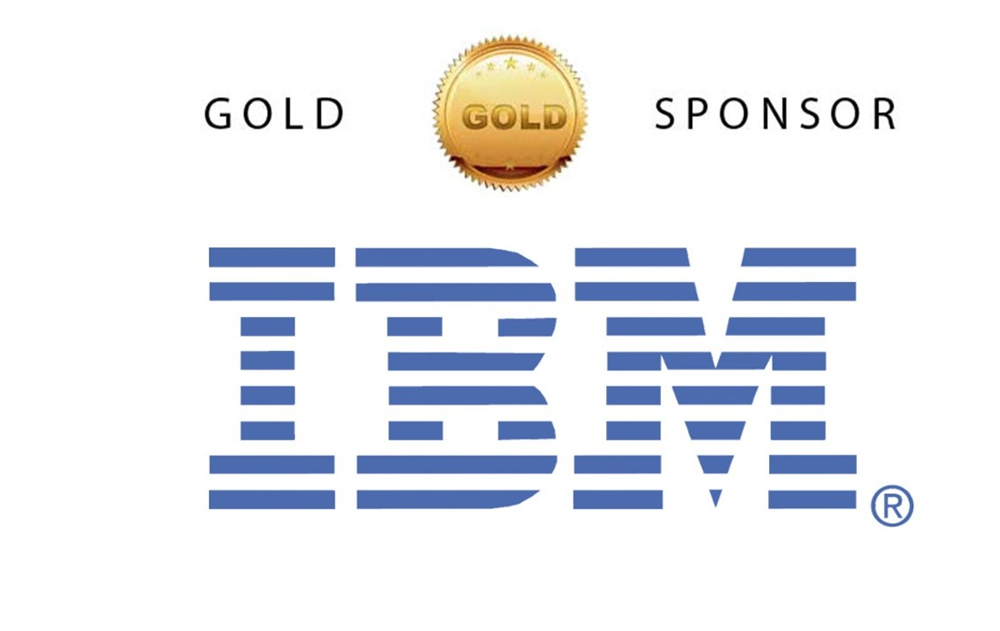
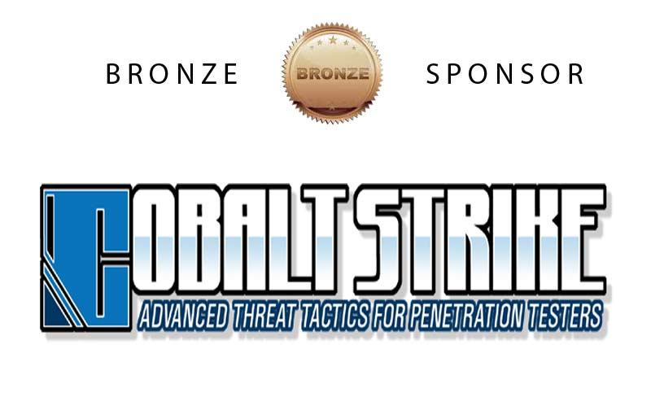

Key Policies
- See the schedule page for dates and deadlines
- A video from the 2013 National CCDC can be viewed here
SECCDC Recruitment Policy and Guidelines
In an effort to help facilitate the development of a regular, national level cyber security exercise, the Center for Infrastructure Assurance and Security at the University of Texas at San Antonio hosted the first Collegiate Cyber Defense Competition (CCDC) for the Southwestern region in May 2005. In June 2005, members of the Kennesaw State University ’s Center for Information Security Education attended their presentation and recognized the value of the program. We immediately volunteered to create a similar event at KSU in 2006, to provide a regional competition to recognize the best team in the Southeast, and to work to sponsor that team to the National competition hosted by UTSA (see www.nationalccdc.org).
While similar to other cyber defense competitions in many aspects, the SECCDC, as part of the CCDC, is unique in that it focuses on the operational aspect of managing and protecting an existing network infrastructure. While other exercises examine the abilities of a group of students to design, configure, and protect a network over the course of an entire semester, this competition is focused on the more operational task of assuming administrative and protective duties for an existing “commercial” network. Teams will be scored based on their ability to detect and respond to outside threats, maintain availability of existing services such as mail servers and web servers, respond to business requests such as the addition or removal of additional services, and balance security needs against business needs.
SECCDC Registration Cancellation Policy
Cancellation requests must be received no later than 14 days prior to the SECCDQC qualification competition in order to ensure proper refunds. Refunds will be made if FAXED or MAILED SIGNED notice of cancellation is received no later than the following dates for the corresponding refunds to be received.
Cancellations sent via e-mail, cancellations without the signature of the registrant, or those received after 14 days prior to the SECCDQC will not be accepted and the registrant institution will be liable for the full registration. The registration fee applies to both sponsorship fees and registration fees for the SECCDQC and on-site SECCDC. Submission of a registration fee does not guarantee a team a place in the on-site competition.
If a team does not make the top 8 teams in the SECCDQC, they are NOT eligible for a refund. If for any reason the competition is rescheduled due to events beyond the competition committee's control, all registration and sponsorship fees will be transferred to the new date. Should a competition team not be able to make the new date, a 50% refund will be issued if the request is made at least 14 days before the date of the rescheduled competition (SECCDQC only).
By submitting payment, you are agreeing to the above cancellation policy. As a public educational institution, Kennesaw State University is exempt from United States federal income tax. Registration fees paid to KSU for this competition are not tax-deductible as a charitable contribution but may be deducted as ordinary and necessary business expenses. Sponsorship fees MAY be tax-deductible as a charitable contribution, please consult a tax professional to determine eligibility.
TEAM REGISTRATION SCHEDULE:
Rules - Rules.PDF – Effective Jan 1, 2016
The following Rules apply to institutions competing in the Southeast Collegiate Cyber Defense
Competition and are based on, and reflect changes made to, the National Collegiate Cyber Defense
Competition as of January 2016. Updates will be provided as available.
All institution teams, including student competitors and university representatives, must comply with these rules. Failure to do so can result in penalties ranging from points against the team, individual or team disqualification, individual or team expulsion, individual or team suspension or banishment from future competitions, to law enforcement involvement.
All individuals associated with the competition must sign a compliance agreement and disclosure waiver prior to being allowed to attend the competition.
Areas where the SECCDC rules differ from the National CCDC rules are highlighted in italics. Some rules are duplicated for emphasis.
Note: These rules reflect the National CCDC Rules committee review of all rules, and are effective as of the date of this packet.
SECCDC Specific rules are clearly marked and prefaced with SECCDC.
SECCDQC (Qualification) competition rules are clearly marked and prefaced with SECCDQC.
Competition Rules
Introduction
The following Rules apply to institutions competing in the Southeast Collegiate Cyber Defense Competition and are based on, and reflect changes made to, the National Collegiate Cyber Defense Competition as of January 2014. Updates will be provided as available.
All institution teams, including student competitors and university representatives, must comply with these rules. Failure to do so can result in penalties ranging from points against the team, individual or team disqualification, individual or team expulsion, individual or team suspension or banishment from future competitions, to law enforcement involvement.
All individuals associated with the competition must sign a compliance agreement and disclosure waiver prior to being allowed to attend the competition.
Areas where the SECCDC rules differ from the National CCDC rules are highlighted in italics. Some rules are duplicated for emphasis.
2016 Rules
The following are the approved national rules in effect for 2016
and subseqent CCDC seasons. Please refer to the official rules for your specific CCDC event for any local variations.
Throughout these rules, the following terms are used:
- Gold Team/Operations Team - competition officials that organize, run, and manage the competition.
- White Team - competition officials that observe team performance in their competition area and evaluate team performance and rule compliance. (SECCDC: a.k.a. Room Judges)
- Red Team - penetration testing professionals simulating external hackers attempting to gain unauthorized access to competition teams’ systems.
- Black Team - competition support members that provide technical support, pick-up and deliver communications, and provide overall administrative support to the competition.
- Blue Team/Competition Team - the institution competitive teams consisting of students competing in a CCDC event.
- Team Captain - a student member of the Blue Team identified as the primary liaison between the Blue Team and the White Team.
- Team Co-Captain - a student member of the Blue Team identified as the secondary or backup liaison between the Blue Team and the White Team, should the Team Captain be unavailable (i.e. not in the competition room).
- Team representatives - a faculty or staff representative of the Blue Team’s host institution responsible for serving as a liaison between competition officials and the Blue Team’s institution.
- Competitors in CCDC events must be full-time students of the institution they are representing.
- Team members must qualify as full-time students as defined by the institution they are attending.
- Individual competitors may participate in CCDC events for a maximum of five seasons. A CCDC season is defined as the period of time between the start of the first state event and the completion of the National CCDC event. Participation on a team in any CCDC event during a given season counts as participation for that entire season.
- A competitor in their final semester prior to graduation is exempt from the full-time student requirement and may compete in CCDC events as a part-time student provided the competitor has a demonstrated record of full-time attendance for the previous semester or quarter.
- If a team member competes in a qualifying, state, or regional CCDC event and graduates before the next CCDC event in the same season, that team member will be allowed to continue to compete at CCDC events during the same season should their team win and advance to the next round of competition.
- Competitors may only be a member of one team per CCDC season.
- A team member may not participate in any role at CCDC events held outside the region in which their team competes during the same CCDC season.
- Individuals who have participated in previous CCDC events in any role other than as a competitor must obtain eligibility approval from the director of the region in which their team competes prior to being added to the team roster. Once a candidate’s eligibility has been approved they will remain eligible for all CCDC events during the same season.
- Each team must submit a roster of up to 12 competitors to the competition director of the first CCDC event they participate in during a given CCDC competition season. Rosters must be submitted at least two weeks prior to the start of that event. All competitors on the roster must meet all stated eligibility requirements. No changes to the team roster will be permitted after the team competes in their first CCDC event. The competition team must be chosen from the submitted roster. A competition team is defined as the group of individuals competing in a CCDC event.
- SECCDC Supplemental Rule: Rosters are due to the SECCDC Competition organizers at least 72 hours prior to the first competition (the Virtual Prequalification Competition), however changes may be WITHIN the roster up through the start of the competition, and between events as needed. SECCDQC Room Judges information must be provided by the date specified in the Call for Teams.
- Each competition team may consist of up to eight (8) members chosen from the submitted roster.
- Each competition team may have no more than two (2) graduate students as team members.
- If the member of a competition team advancing to a qualifying, state, regional, or national competition is unable to attend that competition, that team may substitute another student from the roster in their place prior to the start of that competition.
- Once a CCDC event has begun, a team must complete the competition with the team that started the competition. Substitutions, additions, or removals of team members are prohibited except for extreme circumstances.
- Team Representatives must petition the Competition Director in writing for the right to perform a change to the competition team.
- The Competition Director must approve any substitutions or additions prior to those actions occurring.
- Teams or team members arriving after an event’s official start time, for reasons beyond their control, may be allowed to join the competition provided a substitution has not already been made. Event coordinators will review the reason for tardiness and make the final determination.
- Each team will designate a Team Captain for the duration of the competition to act as the team liaison between the competition staff and the teams before and during the competition. In the event of the Team Captain’s absence, teams must have an identified team liaison serving as the captain in the competition space at all times during competition hours.
- SECCDQC Supplemental Rule: During a competition, only the Team Captain, or in the Captain’s absence the Co-Captain, may interact with the White Team, unless a team member has specifically been approached by the White Team. All correspondence, questions or issues must follow this chain of command Team Captain (or Co-Captain) to White Team to Gold Team/Operations. Violation of this chain of command MAY result in a points penalty against the competition team.
- SECCDC Supplemental Rule: All questions regarding the competition organization, its systems and operations, including responses to competition injections, should be addressed to the competition organization’s chief information officer. Questions regarding the competition or its rules should be addressed to competition officials. Violation of this separation of duties MAY result in a points penalty against the competition team.
- An institution is only allowed to compete one team in any CCDC event or season.
- Each team must have at least one representative present at every CCDC event. The representative must be a faculty or staff member of the institution the team is representing.
- Once a CCDC event has started, representatives may not coach, assist, or advise their team until the completion of that event (including overnight hours for multi-day competitions).
- Representatives may not enter their team’s competition space during any CCDC event.
- Representatives must not interfere with any other competing team.
- The representative, or any non-team member, must not discuss any aspect of the competition event, specifically event injections, configurations, operations, team performance or red team functions, with their team during CCDC competition hours and must not attempt to influence their team’s performance in any way.
- SECCDC Supplemental Rule: The institutional representative must remain in the area designated during competition hours. Should the institutional representative need to leave the competition area, they must ensure that they notify the operations center and leave a contact number in case of emergencies.
- Throughout the competition, Operations and White Team members will occasionally need access to a team’s system(s) for scoring, troubleshooting, etc. Teams must immediately allow Operations and White Team members’ access when requested.
- SECCDC Supplemental Rule: For technical support, such as a system reset, Black team members will require access to systems. These individuals will only be allowed access if accompanied or specifically authorized by a Gold Team/Operations or White Team member.
- SECCDQC Supplemental Rule: For the qualification competition, the local judge may inspect all systems for rules compliance at any time before, during or after the competition.
- Teams must not connect any devices or peripherals to the competition network unless specifically authorized to do so by Operations or White Team members.
- SECCDC Supplemental Rule: If a competition team is provided with supplemental equipment in the competition room, and that equipment is specifically designated as support for the team’s competition efforts, it is preauthorized for connection to the competition network and systems (e.g. USB hard drive, flash drive, printer).
- SECCDQC Supplemental Rule: For the qualification competition, the host institution may stage replacement equipment in the competition rooms. This equipment cannot be used until authorized by SECCDC competition officials, after the team reports a systems failure and has made every effort to recover the initial equipment. Once authorized, the local judge will supervise the installation of replacement equipment, and inspect it for unauthorized materials prior to allowing it to be used by the local team.
- Teams may not modify the hardware configurations of competition systems. Teams must not open the case of any server, printer, PC, monitor, KVM, router, switch, firewall, or any other piece of equipment used during the competition. All hardware related questions and issues should be referred to the White Team.
- Teams may not remove any item from the competition area unless specifically authorized to do so by Operations or White Team members including items brought into the team areas at the start of the competition.
- SECCDC Supplemental Rule: This includes items brought into the competition rooms by the Blue teams at the start of the competition.
- Team members are forbidden from entering or attempting to enter another team’s competition workspace or room during CCDC events.
- Teams must compete without “outside assistance” from non-team members including team representatives from the start of the competition to the end of the competition (including overnight hours for multi-day events). All private communications (calls, emails, chat, texting, directed emails, forum postings, conversations, requests for assistance, etc) with non-team members including team representatives that would help the team gain an unfair advantage are not allowed and are grounds for disqualification and/or a penalty assigned to the appropriate team.
- Printed reference materials (books, magazines, checklists) are permitted in competition areas and teams may bring printed reference materials to the competition.
- SECCDC Supplemental Rule: Each team is restricted to two (2) standard business file boxes (approx 12 x 12 x 18) of hard copy/printed material. Refer also to rule 4.d. and 4.d.i.
- Team representatives, sponsors, and observers are not competitors and are prohibited from directly assisting any competitor through direct advice, “suggestions”, or hands-on assistance. Any team sponsor or observers found assisting a team will be asked to leave the competition area for the duration of the competition and/or a penalty will be assigned to the appropriate team.
- SECCDC Supplemental Rule: Team representatives, sponsors, and observers are prohibited from entering team areas without direct supervision of the Competition officials (Gold Team). Institutions wishing to photograph students during the competition must be escorted by a Gold Team representative, and must photograph the team from outside the competition area. For the qualification competitions Institutions may “stage” competition photographs before or after the competition hours. For the onsite competition, an official event photographer will take pictures of all teams and make them available after the competition.
- Team members will not initiate any contact with members of the Red Team during the hours of live competition. Team members are free to talk to Red Team members during official competition events such as breakfasts, dinners, mixers, and receptions that occur outside of live competition hours.
- Teams are free to examine their own systems but no offensive activity against any system outside the team's assigned network(s), including those of other CCDC teams, will be tolerated. Any team performing offensive activity against any system outside the team's assigned network(s) will be immediately disqualified from the competition. If there are any questions or concerns during the competition about whether or not specific actions can be considered offensive in nature contact the Operations Team before performing those actions.
- Teams are allowed to use active response mechanisms such as TCP resets when responding to suspicious/malicious activity. Any active mechanisms that interfere with the functionality of the scoring engine or manual scoring checks are exclusively the responsibility of the teams. Any firewall rule, IDS, IPS, or defensive action that interferes with the functionality of the scoring engine or manual scoring checks are exclusively the responsibility of the teams.
- All team members will wear badges identifying team affiliation at all times during competition hours.
- Only Operations Team/White Team members will be allowed in competition areas outside of competition hours.
- Internet resources such as FAQs, how-to's, existing forums and responses, and company websites, are completely valid for competition use provided there is no fee required to access those resources and access to those resources has not been granted based on a previous membership, purchase, or fee. Only resources that could reasonably be available to all teams are permitted. For example, accessing Cisco resources through a CCO account would not be permitted but searching a public Cisco support forum would be permitted. Public sites such as Security Focus or Packetstorm are acceptable. Only public resources that every team could access if they chose to are permitted.
- SECCDC Supplemental Rule: For the SECCDC on-site regional competition, all Internet access is by proxy server. In order to access any external Web site, Blue Teams must submit a candidate proxy list at least 2 weeks prior to the competition. This list will be reviewed, and only authorized sites added to the proxy list.
- SECCDC Supplemental Rule: Once the competition has started, additions to the proxy list may be requested via a properly formatted request to the CIO/CISO.
- SECCDC Supplemental Rule: The proxy list will not be shared with any competition team. If a team wishes to access a particular site, they must request it in advance. Support sites for operating systems used during the competition will be pre‐configured in the Proxy Server. Teams will be notified of these sites.
- SECCDQC Supplemental Rule: For the Qualification competition, Internet access will be monitored and enforced by local judges.
- Teams may not use any external, private electronic staging area or FTP site for patches, software, etc. during the competition. Teams are not allowed to access private Internet-accessible libraries, FTP sites, web sites, network storage, email accounts, or shared drives during the competition. All Internet resources used during the competition must be freely available to all other teams. The use of external collaboration and storage environments such as Google Docs/Drive is prohibited unless the environment was provided by and is administered by competition officials. Accessing private staging areas or email accounts is grounds for disqualification and/or a penalty assigned to the appropriate team.
- No peer to peer or distributed file sharing clients or servers are permitted on competition networks unless specifically authorized by the competition officials.
- Internet activity, where allowed, will be monitored and any team member caught viewing inappropriate or unauthorized content will be subject to disqualification and/or a penalty assigned to the appropriate team. This includes direct contact with outside sources through AIM/chat/email or any other public or non-public services including sites such as Facebook. For the purposes of this competition inappropriate content includes pornography or explicit materials, pirated media files, sites containing key generators and pirated software, etc. If there are any questions or concerns during the competition about whether or not specific materials are unauthorized contact the White Team immediately.
- All network activity that takes place on the competition network may be logged and subject to release. Competition officials are not responsible for the security of any information, including login credentials, which competitors place on the competition network.
- SECCDC Supplemental Rule: For the onsite regional, all event logs are subject to public review and release subsequent to the following conditions: Should a competition team desire to view their own logs, the Team Representative may submit a request to competition officials after the competition has ended. Teams desiring to review the logs from other teams must submit a valid, legitimate reason in order to gain access.
- SECCDC Supplemental Rule: Competition logs may be provided to external entities for non-profit research and investigation, if a legitimate request is received within 60 days of the competition.
- SECCDC Supplemental Rule: All logs will be destroyed 60 days after the competition.
- No memory sticks, flash drives, removable drives, CDROMs, electronic media, or other similar electronic devices are allowed in the room during the competition unless specifically authorized by the Operations or White Team in advance. Any violation of these rules will result in disqualification of the team member and/or a penalty assigned to the appropriate team.
- Supplemental SECCDC Rule: All cellular calls, texts, smart phone usage, and so on must be made and received/viewed outside of the team’s competition space and must not be used to receive outside assistance.
- Supplemental SECCDQC Rule: For the qualification competition, should the team representative desire to provide USB flash drives for the team’s use they must notify the Competition Director in advance, and attest that the devices were wiped clean prior to the completion, and only issued after the start of the competition.
- Teams may not bring any type of computer, laptop, tablet, PDA, cell phone, smart phone, or wireless device into the competition area unless specifically authorized by the Operations or White Team in advance. Any violation of these rules will result in disqualification of the team member and/or a penalty assigned to the appropriate team.
- SECCDQC Supplemental Rule: For the qualification competition, all equipment to be used for the competition must be the property of the host institution. No student owned or supplied equipment may be connected to local systems or the competition networks. The team representative and local judge will inspect the local systems and attest to their status.
- Printed reference materials (books, magazines, checklists) are permitted in competition areas and teams may bring printed reference materials to the competition as specified by the competition officials.
- SECCDC Supplemental Rule: (See Rule 4.g for restrictions on the quantity of printed materials which may be brought into the competition area).
- SECCDC Supplemental Rule: If a competition team member with a documented disability requires special equipment to compete, the Team Representative must notify competition officials at least 30 days prior to the competition to facilitate the evaluation and authorization of needed equipment. Failure to do so MAY result in the student team member not being able to use the needed equipment during the competition.
- All participants, including competitors, coaches, White Team, Red Team, Ops Team, and Gold Team members, are expected to behave professionally at all times during all CCDC events including preparation meetings, receptions, mixers, banquets, competitions and so on.
- In addition to published CCDC rules, Host Site policies and rules apply throughout the competition and must be respected by all CCDC participants.
- All CCDC events are alcohol free events. No drinking is permitted at any time during competition hours.
- Activities such as swearing, consumption of alcohol or illegal drugs, disrespectful or unruly behavior, sexual harassment, improper physical contact, becoming argumentative, willful violence, or willful physical damage have no place at the competition and will not be tolerated.
- Violations of the rules can be deemed unprofessional conduct if determined to be intentional or malicious by competition officials.
- Competitors behaving in an unprofessional manner may receive a warning from the White Team, Gold Team, or Operations Team for their first offense. For egregious actions or for subsequent violations following a warning, competitors may have a penalty assessed against their team, be disqualified, and/or expelled from the competition site. Competitors expelled for unprofessional conduct will be banned from future CCDC competitions for a period of no less than 12 months from the date of their expulsion.
- Individual(s), other than competitors, behaving in an unprofessional manner may be warned against such behavior by the White Team or asked to leave the competition entirely by the Competition Director, the Operations Team, or Gold Team.
- PRIOR TO THE COMPETITION: Team captains are encouraged to work with the Competition Director and their staff to resolve any questions regarding the rules of the competition or scoring methods before the competition begins.
- DURING THE COMPETITION: Protests by any team must be presented in writing by the Team Captain to the White Team as soon as possible. The competition officials will be the final arbitrators for any protests or questions arising before, during, or after the competition. Rulings by the competition officials are final. All competition results are official and final as of the Closing Ceremony.
- SECCDC Supplemental Rule: White team members will notify the Gold Team of a protest immediately and forward ALL formally submitted protests from the Team Captain for review and arbitration.
- SECCDC Supplemental Rule: Any team representative that approaches a competition official during the competition to register a complaint or protest on behalf of their competition team may be asked to leave the competition area.
- SECCDQC Supplemental Rule: The competition director reserves the right to correct an error of fact after the prelim qualification event, in order to ensure that the most deserving teams are invited to the on-site SECCDC regional event. All reasonable and prudent care will be taken to ensure such corrections are made quickly and with the utmost respect for the institutions affected.
- In the event of an individual disqualification, that team member must leave the competition area immediately upon notification of disqualification and must not re-enter the competition area at any time. Disqualified individuals are also ineligible for individual or team awards.
- In the event of a team disqualification, the entire team must leave the competition area immediately upon notice of disqualification and is ineligible for any individual or team award.
- All competition materials including injects, scoring sheets, and team-generated reports and documents must remain in the competition area. Only materials brought into the competition area by the student teams may be removed after the competition concludes.
- SECCDC Supplemental Rule: AFTER THE COMPETITION: any team member that behaves unprofessionally in their public comments about the event may be prohibited from competing in future CCDC events and/or referred to their host institutions for student misconduct.
- Scoring will be based on keeping required services up, controlling/preventing un-authorized access, and completing business tasks that will be provided throughout the competition. Teams accumulate points by successfully completing injects and maintaining services. Teams lose points by violating service level agreements, usage of recovery services, and successful penetrations by the Red Team.
- Scores will be maintained by the competition officials and may be shared at the end of the competition. There will be no running totals provided during the competition. Team rankings may be provided at the beginning of each competition day.
- Any team action that interrupts the scoring system is exclusively the responsibility of that team and will result in a lower score. Any team member that modifies a competition system or system component, with or without intention, in order to mislead the scoring engine into assessing a system or service as operational, when in fact it is not, may be disqualified and/or the team assessed penalties. Should any question arise about scoring, the scoring engine, or how scoring functions, the Team Captain should immediately contact the competition officials to address the issue.
- Teams are strongly encouraged to provide properly
formatted incident reports for each Red Team incident they detect. Incident reports can be completed as needed throughout the competition and presented to the White Team for collection. Incident reports must contain a description of what occurred (including source and destination IP addresses, timelines of activity, passwords cracked, access obtained, damage done, etc), a discussion of what was affected, and a remediation plan. A thorough incident report that correctly identifies and addresses a successful Red Team attack may reduce the Red Team penalty for that event – no partial points will be given for incomplete or vague incident reports.
- SECCDC Supplemental Rule: incident reports must use the specified format, and must be submitted within 2 hours of the incident in order to receive any reduction in Red Team penalty.
- SECCDC Supplemental Rule: Some incidents are “seeded” throughout SECCDC equipment, such as planted malware or inappropriate material. Since these Incident reports are not directly affiliated with a Red Team action, these incident reports are scored and points earned added to the team’s total, UNLESS they correspond to a graded injection, in which case any modification of scoring will be made to that injection.
- Remote teams are required to compete from a location with controlled access, i.e., a separate room or a portion of a room that is dedicated for use during the CCDC event. Workstations and internet access must comply with published requirements.
- One or more Remote Site Judge(s) must be assigned to the team site. At least one Remote Site Judge must be present at the remote site for the duration of the event in order to facilitate the execution of the CCDC. The qualifications of Remote Site Judge are the same as Event Judge. Subject to the specifications of the remote competition, the responsibilities of the Remote Site Judge may include the following:
- Be present with the participating team to assure compliance with all event rules
- Provide direction and clarification to the team as to rules and requirements
- Establish communication with all Event Judges and provide status when requested
- Provide technical assistance to remote teams regarding use of the remote system
- Review all equipment to be used (SECCDC: before and) during the remote competition for compliance with all event rules
- Assure that the Team Captain has communicated to the Event Judges approval of initial system integrity and remote system functionality
- Assist Event Judges in the resolution of grievances and disciplinary action, including possible disqualification, where needed
- Report excessive misconduct to local security or police
- Assess completion of various injects based on timeliness and quality when requested by Event Judges
- Act as a liaison to site personnel responsible for core networking and internet connectivity
- Provide direct technical assistance to teams when requested by Event Judges
- Provide feedback to students subsequent to the completion of the CCDC event
- A recommendation for Remote Site Judge(s) is expected to be given from a Team representative of the participating institution to the CCDC Event Manager. Remote Site Judge(s) must not be currently employed, a student of, or otherwise affiliated with the participating institution, other than membership on an advisory board. CCDC Event Managers should also be apprised of a contact from the participating institution responsible for core networking and internet connectivity that will be available during the CCDC event.
- SECCDC Supplemental Rule: The video recording of SECCDC events and event materials is prohibited without the expressed permission of the competition officials. Similarly the broadcast, publication or posting of event materials in any public forum, to include documentation and team packets before, during or after a SECCDC competition is prohibited and may result in teams being prohibited from competing in the current and/or future competition seasons. Teams and team representatives may use flash photography during the reception and closing ceremonies. We will make every effort to provide professionally recorded video during the awards portion of the final presentation, and to have an escort to allow team representatives to take photographs of their teams during the competition, at designated times.
1. Competitor Eligibility
2. Composition
4. Competition Conduct
5. Internet Usage
6. Permitted Materials
7. Professional Conduct
8. Questions, Disputes, and Disclosures
9. Scoring
10. Remote/ Team Site Judging and Compliance
With the advent of viable remote access technologies and virtualization, teams will have the ability to participate in CCDC events from their respective institutions. This section addresses policy for proper engagement in CCDC events for remote teams.
11. Local Competition Rules
The local competition rules section is unique to each specific CCDC competition. Please refer to the official rules for your CCDC event for more information.
Our Sponsors:
-

- 
-

-

-

- 